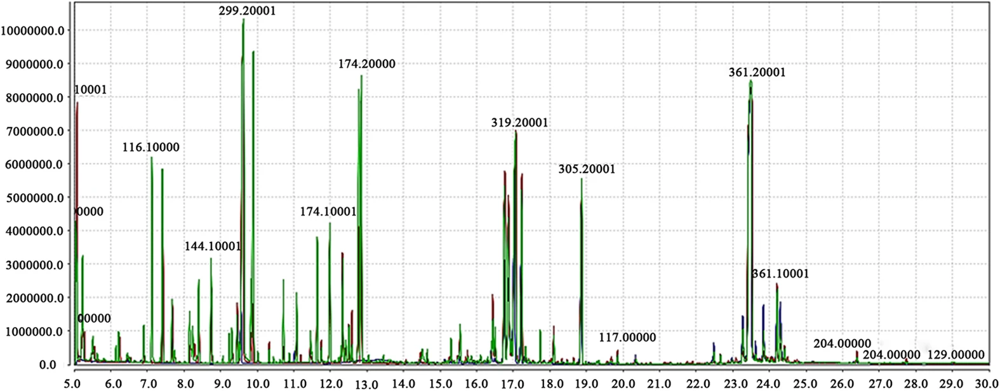

AG Intellisense is commercialising established green-chemistry science that academic research has proven but industry has failed to act on — building the first manufacturing pathway to extract food-grade cellulose and nanocellulose from agricultural waste streams at commercial scale.
Our current focus is food-grade cellulose, which we then process into Cellulose Nanocrystals (CNC) and Cellulose Nanofibrils (CNF) — high-performance bio-materials with applications across packaging, composites, biomedical devices and coatings. The global nanocellulose market is growing at 19–24% CAGR, projected to reach multi-billion-dollar scale by 2030–2035. While our initial feedstocks are FNQ agricultural residues, our platform is designed to process virtually any organic waste stream.

R&D Phase — FNQ
Agricultural residues from sugarcane crushing, banana harvesting, and coffee processing are rich in cellulose — one of the most widely used materials across the food, pharmaceutical, and industrial sectors. Our first project extracts food-grade cellulose from these waste streams using a green chemistry process developed in partnership with a leading Australian university.
These feedstocks are generated in large volumes within Far North Queensland and are currently underutilised or discarded. Our metabolomics-guided approach ensures that extraction is targeted, efficient, and produces material that meets food-grade purity standards without harsh solvents.
The project is progressing from laboratory proof-of-concept through pilot process development, with a planned processing facility in FNQ designed to handle these waste streams at commercial scale.
Feedstocks: Sugarcane bagasse • Banana pseudostem • Spent coffee grounds
Target product: Food-grade cellulose
Location: Far North Queensland
Nanocellulose is a rapidly growing advanced material with applications across packaging, composites, biomedical devices, coatings, and more. It is derived from cellulose — making our food-grade cellulose extraction process the natural foundation for nanocellulose production. As our cellulose processes mature, nanocellulose development is the clear next step, building directly on the same feedstocks, chemistry, and infrastructure.
Our metabolomics platform identifies value across a wide range of agricultural waste compounds. While cellulose and nanocellulose are our current focus, the same analytical and extraction capabilities position us to develop additional products as we grow. Further projects will be announced as they progress.
We own the full process and IP. Feedstock is local and abundant. The market opportunity is large and growing fast.
If you are an investor, strategic partner or institutional fund interested in bio-based materials, circular economy, or deep-tech manufacturing in regional Australia, we invite you to discuss how you can participate in the next phase of our growth.